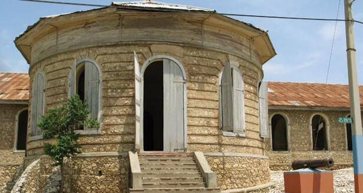

Ministère du tourisme
Ministère du tourismeBienvenue sur le site du ministere du tourisme
Haïti est connu pour son beau paysage, sa nature extraordinaire, ses sites historiques et sites touristiques magnifiques. Nous allons vous présenter certains endroits à visiter absolument en Haïti.
Etes-vous prêt à faire ce voyage ?
Vous trouverez ici toutes les informations sur les sites touristiques de notre région.
Sites touristiques
-
Citadelle La ferriere C'est la plus grande forteresse des Caraïbes : à 900 mètres d'altitude, elle se trouve à 15 km au sud de Cap-Haïtien, au sein du Parc National Historique
En savoir plus -

Le Palais de la Belle-Rivière, communément appelé le « Palais aux 365 portes », a été construit entre 1816 et 1820 par le roi Henri Christophe.
En savoir plus -
Bassin Zim est une cascade d'eau située à quelques kilomètres de la ville de Hinche.
En savoir plus -
Saut-Mathurine est une cascade située à Camp-Perrin, Sud. Il s'agit de l'une des plus grandes chutes d'eau en Haïti.
En savoir plus -

Bassin Bleu est un superbe site naturel situé à proximité de la ville de Jacmel, dans les montagnes.
En savoir plus -
Le Palais Sans-Souci est considéré comme l'un des plus beaux exemples d'architecture coloniale en Haïti, avec des éléments de style néoclassique et des influences caribéennes.
En savoir plus -
Labadie est une station balnéaire qui se situe à moins de 10 km au nord-ouest de Cap-Haïtien. Escale importante pour les bateaux de croisière naviguant dans la mer des Caraïbes, elle est aussi une station balnéaire réputée.
En savoir plus -
La grotte Marie Jeanne, située dans la commune de Port-à-Piment, au Sud d'Haïti, est la plus longue excavation naturelle d'Haïti. Elle est ainsi nommée en mémoire de Marie-Jeanne Lamartinière. Des traces archéologiques prouvent que son existence remonte à l'époque des Taïnos, les premiers habitants de l’île d'Haïti.
En savoir plus -
Fort Jacques et Fort Alexandre constituent une des fortifications du système défensif improvisé par l'empereur Jean-Jacques Dessalines afin de prévenir le retour des Français après l'indépendance de l'île de Haïti
En savoir plus - En savoir plus
-
Le barrage de Péligre est un barrage hydroélectrique construit sur le fleuve Artibonite en Haïti. Il est situé dans le département du Centre, à 52 km de Port-au-Prince et 9 km de Mirebalais.
En savoir plus 4
-
Le musée du Panthéon national haïtien est un musée situé à Port-au-Prince, capitale d'Haïti, qui présente les héros de l'Indépendance, ainsi que le patrimoine historique et culturel haïtien.
En savoir plus